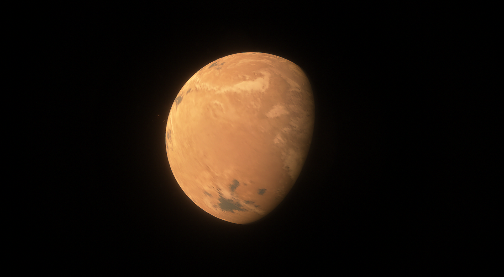
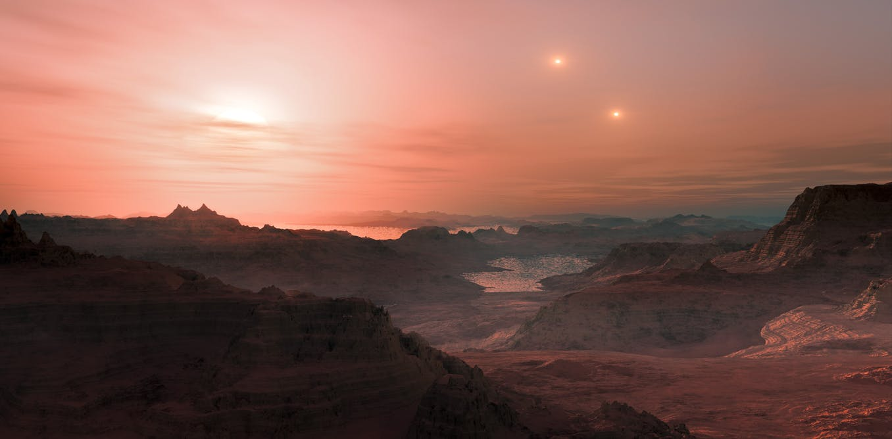

 Planet: Proxima Centauri B / Novus Genesis
Planet: Proxima Centauri B / Novus Genesis
 Distance from Sol: 4.24 light-years
Distance from Sol: 4.24 light-years
 Galaxy: Milky Way
Galaxy: Milky Way
 Constellation: Centaurus
Constellation: Centaurus
 Classification: Temperate Lacustrine Arid Terra with Liquid
Classification: Temperate Lacustrine Arid Terra with Liquid
 Goverment: Centauri Autonomous Province, United LunaTerra protectorate
Goverment: Centauri Autonomous Province, United LunaTerra protectorate
 Characteristics:
Characteristics:
Mass - 1.4553 Terran
Radius - 1.31 TerraDiameter
Gravity - 0.85g
Solar Day - ∞ mol
Atm pressure - 0.026atm
Average Temperature - 146.94 K
Atmosphere Comp: N2, O2, CO2, H20, SO2
Before Colonisation:
Proxima Centauri b is an exoplanet orbiting Proxima Centauri, the closest known star to the Sun. It is located in the Alpha Centauri star system, which is approximately 4.24 light-years away from Earth. Discovered in 2016, Proxima Centauri b is considered a potentially habitable exoplanet, as it resides in the star's habitable zone where conditions might allow for the existence of liquid water. However, various factors, such as the star's variable activity and the planet's unknown atmosphere, make its potential habitability uncertain. Proxima Centauri b has been the subject of ongoing scientific study to better understand its properties and potential for life.
Proxima has consistently captivated the attention of scientists due to its proximity, emerging as the primary focal point in the quest for extraterrestrial life. As humanity began to unravel the mysteries of Venusian alien ship technologies, Proxima Centauri was designated as the paramount target for the inaugural expedition for testing FAster-Than-Light Technologies
After Colonisation:
Following the successful FTL test of the initial Test-Object ID 1 model and the identification of its flaws and mistakes, a second model was meticulously perfected and assembled. The inaugural expedition took place aboard the Kepler-Class Interstellar Cruiser Model 2, affectionately nicknamed "initium" (Latin for "Beginning"). This marked a significant milestone in human history
as it signaled the first instance of humans venturing beyond the confines of the Solar System toward a neighboring star—Proxima B, to be precise. The expedition comprised 52 crew members, led by the experienced ULT Navy jet pilot, Mark Jonathan Cooper.
As the Second Kepler-Class ventured beyond the confines of the Solar System, the crew found themselves in a state of relative isolation, grappling with significant communication delays resulting from time dilation. The MK2, equipped comprehensively for the establishment of an initial small colony, marked a historic moment for humanity. This colony, named Novus Genesis, symbolized a fresh start in human history.
Located near the equator of the planet, Novus Genesis centered its development around a vital water reservoir named Saviour Lake. The lake contained saline water essential for the colony's filtration needs. In this distant and solitary location, the colony existed in complete isolation, a testament to the pioneering spirit of the human endeavor.
